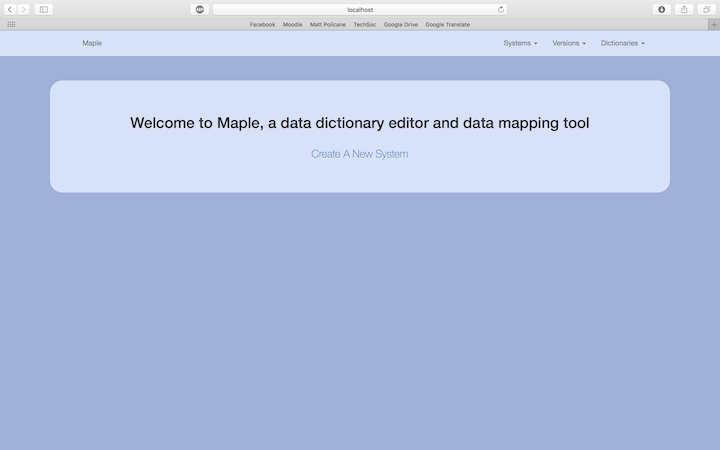
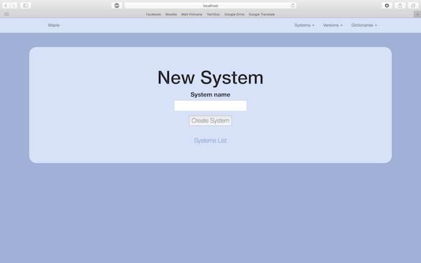
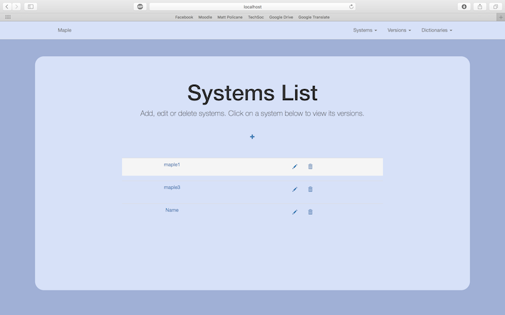
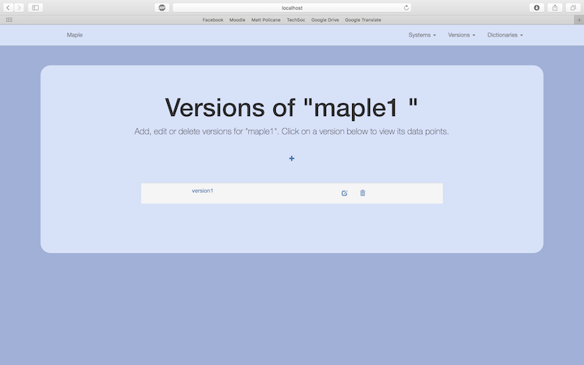
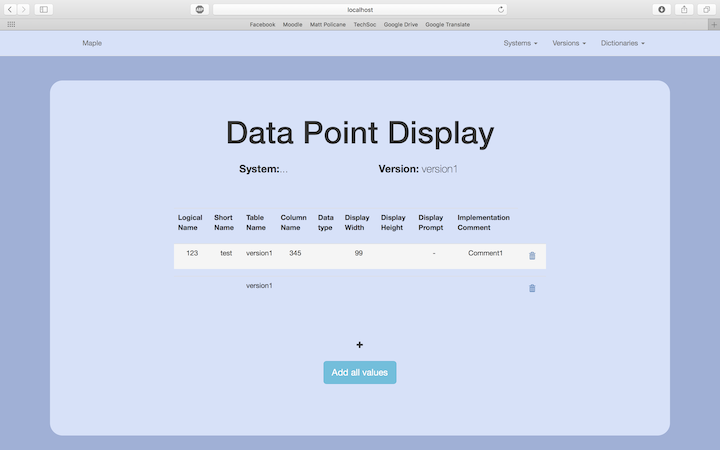
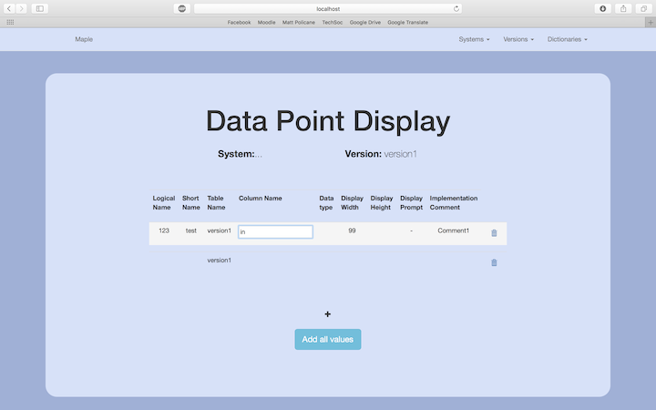
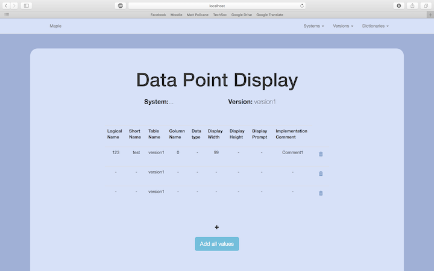
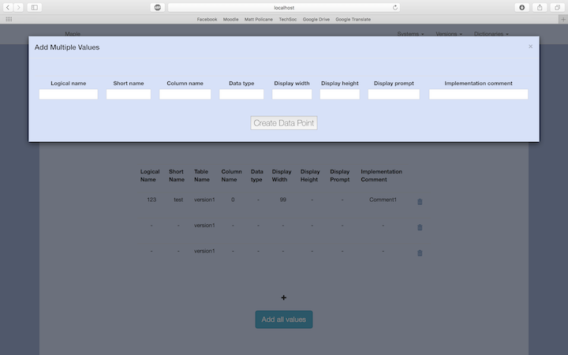
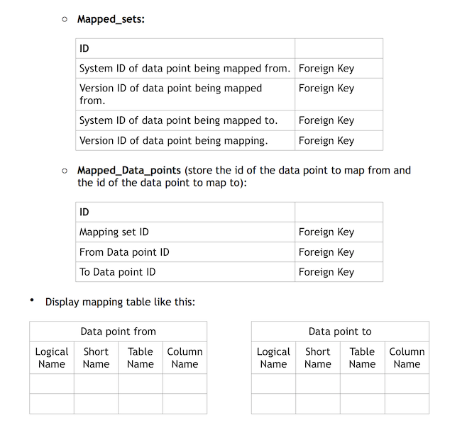

Third Iteration
After gathering feedback from our client regarding our second iteration, we spent time implementing the changes that he requested. The third iteration is the first major style change our web app has undergone, and is now in better shape for use by the client. The third iteration fulfills the following requirements:
- RQ1: The application must be a data dictionary editor
- RQ2: The application must be able to create a data dictionary (logical and physical) for the required system e.g. for a customer system or for a payroll system
- RQ4: The application should ensure that the data dictionaries can handle the versioning of systems
- RQ11: The application must have a screen for loading data dictionaries
- RQ13: The application must have a screen for loading data
- RQ15: The application must accept systems and data dictionaries as its data (content for the application)
- RQ16: The application must define a data model for our data dictionary
- RQ17: The data dictionary should have have the ability to be augmented (can grow in size)

We added some styling to our home page, adding padding and curved edges to our jumbotron.

We carried the styling through to our other pages to keep our application consistant.

We added icons as asked for by our client to complete tasks such as deleting systems as well as using a hover enabled table to add to a better user experience.

The version name was now a link as the client requested, as well as using icons as we did for systems above.

The list of "tables" as it was called in our previous iteration was renamed data points as requested by our client in order to make the pages function more clear.

In line editing was now added so that the data points could be changed by clicking on the data point the user wants to edit. This was achievable using a ruby gem and some JavaScript.

The table of data points would update when a value was edited.

We added a form so that more than one data point can be edited at once as discussed in our last feedback meeting with the client.
Client Feedback
Once we were satisfied with our second iteration, we had another meeting with our client in order to get his feedback and note any changes he would like. The results of the meeting were the following:
- The pop up form to add data points to the data points table should be displayed in column format rather than one row.
- Create an active status attribute for versions and data points which are independent of each other
- Icons such as the bin for deleting should have text appearing on hover saying "delete" in order to add extra accessibility to the user interface
- Add a search bar so that systems and versions can be searched for
- The mapping section should be implemented. We discussed this in detail and came up with the following structure:
